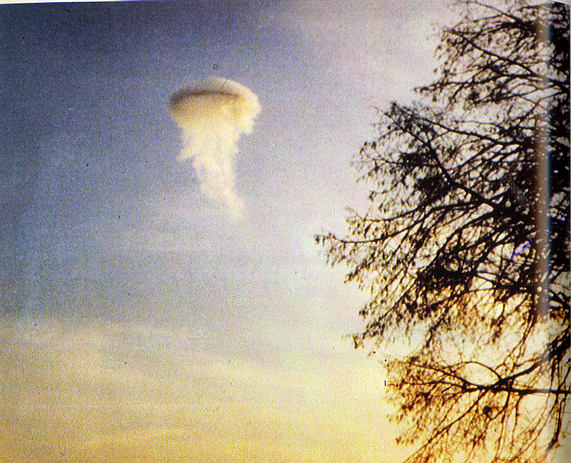

Une lanterne de chemin de fer et une batterie sont retrouvée dans le lac et les
responsables sur place classent l'affaire de Carbondale
comme canular.
Observation du 17 au Danemark UFOs: The Secret History, Michael Hesemann
semblable au cas n° 50 du Rapport Condon

Observation (ci-contre) à Liborg Jutland (Danemark). Cliché pris par H.
Lauersen. Enquêté par le major Hans Petersen de la force aérienne danoise. Une explication scientifique de l'effet
vaporisant a été proposée comme étant due à une surface de l'ovni plus froide que -180 °C, l'air environnant
devenant alors liquide et s'écoulant vers le sol, donnant à l'objet une apparence de méduse.